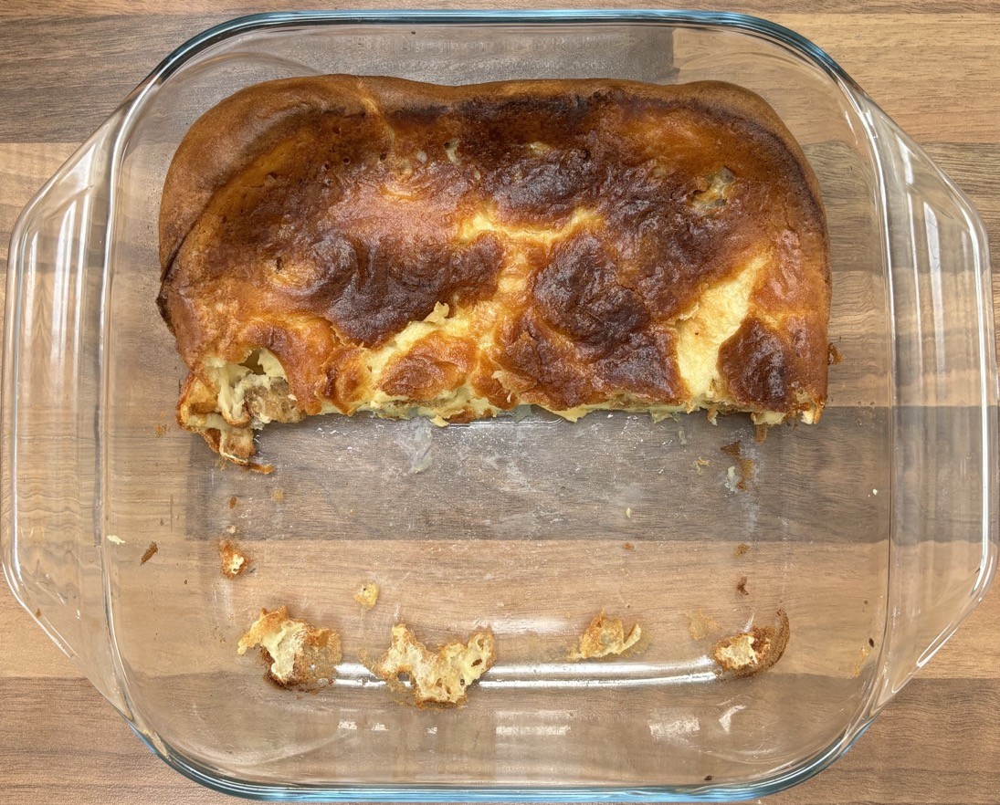

Toad in the hole
- Preheat oven to 230°C
Batter
- Blitz till smooth
- 285ml (295g) milk
- 115g plain flour
- 3 large eggs
Toad in the hole
- Pour into square 22x22cm roasting dish
- 2 tbsp vegetable oil
- Heat in oven at 230°C till hot
- Arrange in dish
- 8 sausages
- Cook at 230°C till for 15-20 mins till sausages browning
- Pour over batter
- Cook at 230°C for 15-20 mins till batter is golden and has risen, don't open the oven till done
Serving
- Sainsbury's onion gravy
- Mash
- Peas, broccoli
- 4 portions
Notes
Pics
